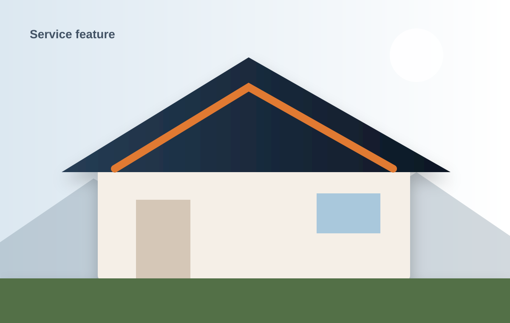
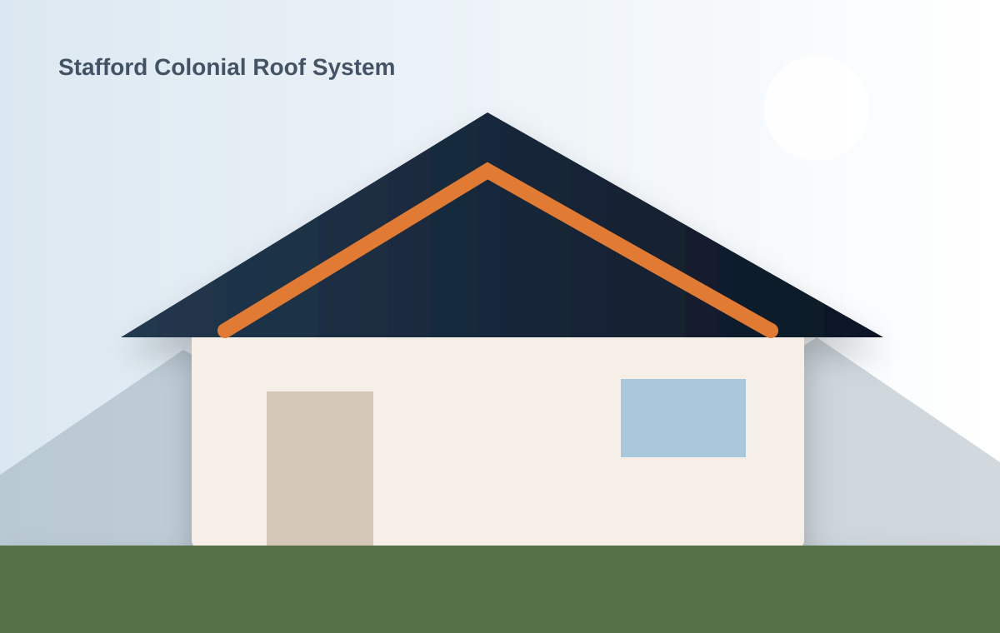
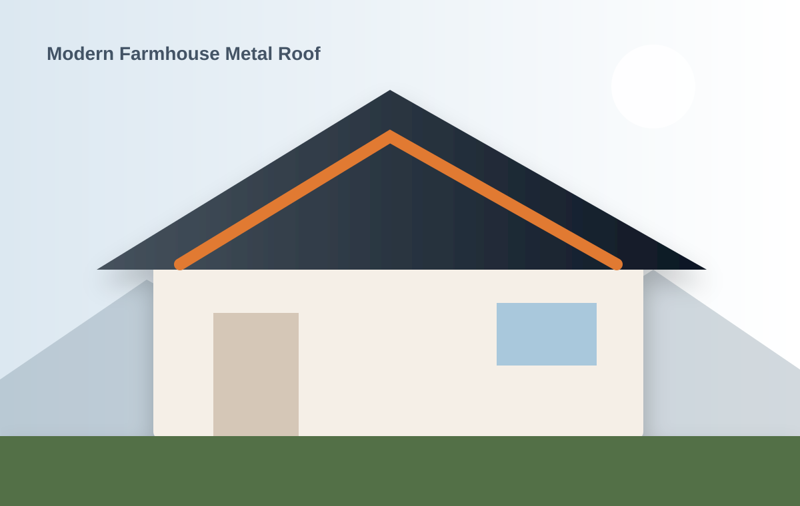
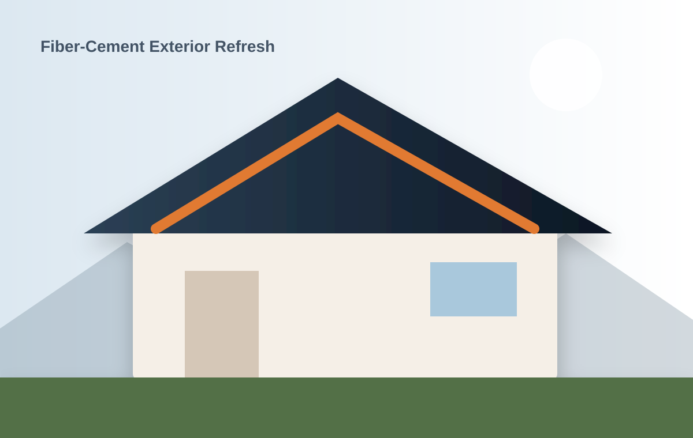

Residential roof replacement
Architectural shingles, standing seam metal, ventilation correction, and full tear-offs.
Learn morePremium roofing, siding, and storm-restoration work backed by clear communication, meticulous crews, and warranties that mean something.

From the first inspection to the final magnetic sweep, every phase is documented, scheduled, and managed by a dedicated project lead.
Architectural shingles, standing seam metal, ventilation correction, and full tear-offs.
Learn moreDocumented inspections, emergency dry-ins, targeted repair, and insurance-scope support.
Learn moreCoordinated exterior packages that improve drainage, durability, and curb appeal.
Learn more
You get a documented inspection, a clear scope, real material options, and one point of contact from contract to closeout.
We built our workflow to reduce surprises, protect your property, and keep your project moving.
Evaluate roofing, flashing, ventilation, drainage, and visible interior symptoms.
Provide a photo-rich scope with clear material and warranty options.
Manage delivery, protection, workmanship, and cleanup through one field lead.
Complete a final walkthrough, register warranties, and archive project documents.

Full tear-off, deck repair, ventilation correction, and architectural shingle upgrade.

24-gauge standing seam roof with custom chimney, valley, and wall flashing.

Siding, soffit, fascia, trim, gutters, and coordinated exterior color package.
★★★★★“IronPeak was the first contractor who showed us exactly what was failing and why. The crew protected everything, finished when promised, and left the yard cleaner than they found it.”
We will inspect the system, explain the evidence, and give you options without turning the visit into a pressure pitch.
Get a free roof assessmentRequest a no-pressure exterior assessment and receive a photo-documented recommendation.